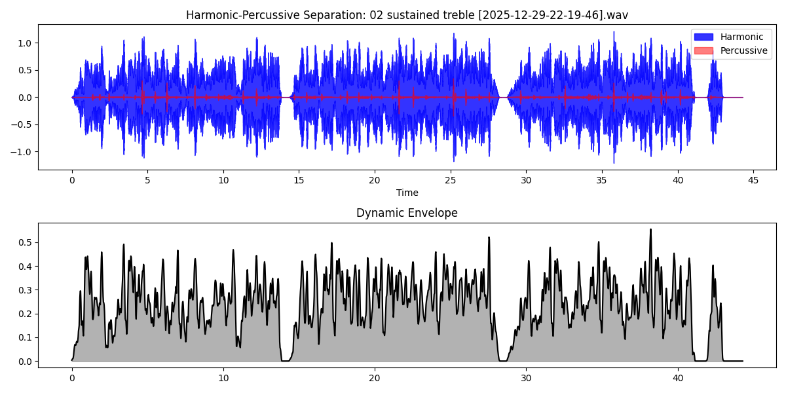
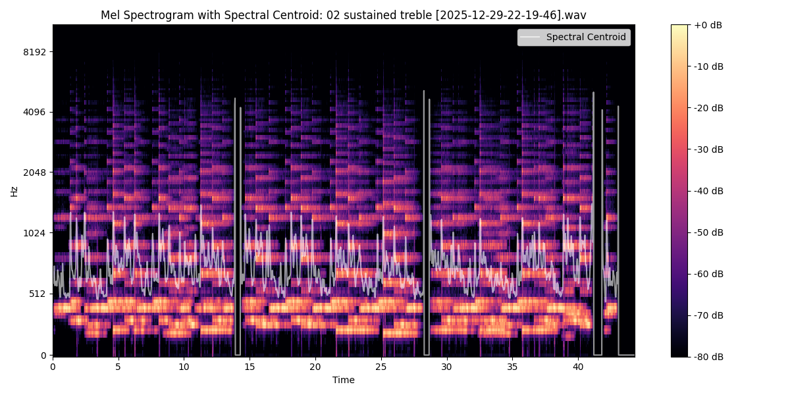
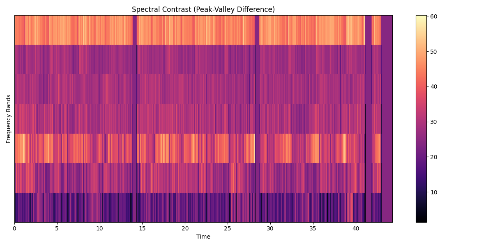
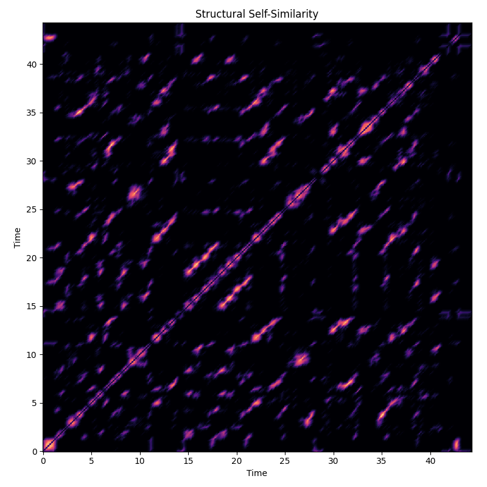

Audio Pattern Report: 02 sustained treble [2025-12-29-22-19-46].wav
Prominent Patterns & Observations
Prominence: 95%
Sustained Harmonic Resonance
The audio is overwhelmingly harmonic (Ratio 46.99). It exhibits long-form resonance with stable tonal centers.
Prominence: 90%
Dominant Pitch Constellation
Strong energy concentration in G#, A#, D#. Fundamental frequencies are anchored around 409.1Hz and 419.9Hz.
Prominence: 70%
Broadband Spectral Complexity
The sound contains significant noise or complex, dense frequency distributions (stochastic patterns).
Technical Visualizations
Temporal & Dynamic Envelope

Displays the raw waveform separated into harmonic (blue) and percussive (red) components, with the overall loudness envelope below.
Spectral Density (Mel-Scale)

Heatmap of energy across the frequency spectrum. The white line tracks the 'center of mass' of the sound (Spectral Centroid).
Spectral Contrast Peaks

Highlights the difference between spectral peaks and valleys, revealing the 'sharpness' of the tonal content across frequency bands.
Structural Recurrence

A map of temporal self-similarity. Diagonals and blocks indicate repeating patterns or stable textures over the course of the recording.